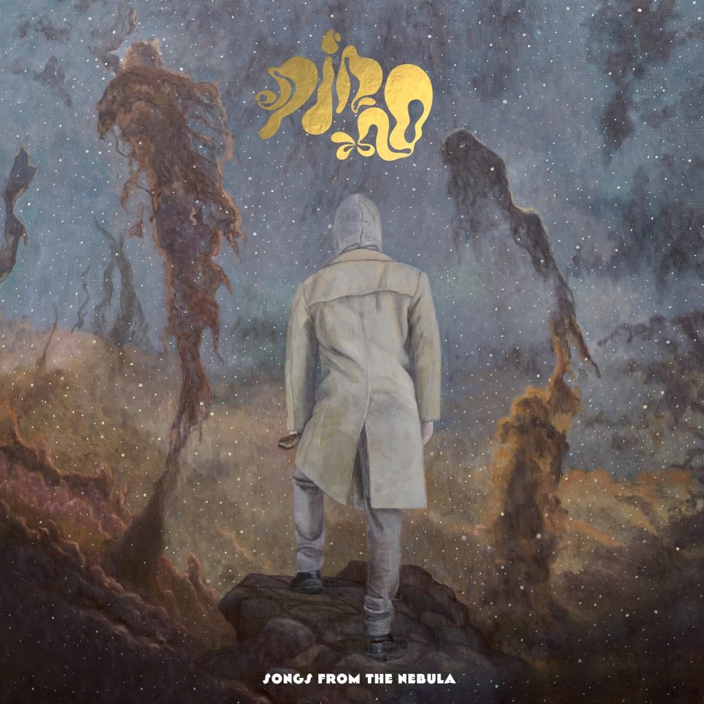

Music
Beyond research, I am an active musician in Ping. Listen to our album Songs from the Nebula.
Music also finds its way into my work with data visualisation: my ggplot2 tutorial shows how to create a timeline of Ping’s members and albums.

Film
Explore the Sight & Sound 2022 Greatest Films poll
Browse the rankings and individual voter ballots, filter films by decade, country or genre, and build your own top-10 list to find the voters whose choices most closely match yours.
I am a lifelong cinephile. When the British Film Institute published the results of its 2022 Sight & Sound Greatest Films poll, I wanted a better way to explore the data than a static list. The result is an interactive Shiny app built in R, covering more than 21,000 ballot entries across over 4,500 films.
The app was also an exercise in what is possible with R and Shiny for data visualisation. I built it with assistance from Claude. The full source code is available inside the app itself as a starting point for similar projects.